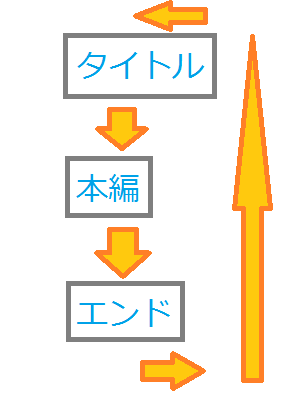

C言語初めてのゲームの基本要素
対象
ゲームを作ったことがなくて、DxLibの導入方法を済ませた人が対象となります。
内容
ゲームを作り方を勉強するための基礎の基礎を勉強します。
構成
No.1 ゲームに必要なものの基本
No.1-1 画像
No.1-2 音楽
No.1-3 プログラム
No.2 ゲームの基本構成
No.3 ゲームの-下準備-
No.4 ゲームの-画像-
No.5 ゲームの-音楽-
本編
今回はものすごく簡単なゲームを作ります。と言ってもゲームを作るのに何が必要とかどういった構成をするべきとかわからないと言った方がいると思います。
そこでまずゲームを作るうえで必要なものを上げてみましょう
端的に並べてみると
【画像】
【音楽】
【プログラム】
の３つです。
画像は視覚を通じてゲームの臨場感を出してくれます。
そんな画像ですが、画像と言ってもゲームの上ではいろいろと必要なものが出てきます。
- 背景
これはゲームの上では欠かせないものとなります。例えば、［タイトル画面］や［ゲーム本編］や［クリア画面］で背景は必要となります。
最初はプログラム上での扱いやすさを重視して［640x480］の画面サイズでそれに合う大きさの画像を使います。最初は基本的にこの大きさが良いと思います
- ２、プレイヤー
ユーザーが操作するキャラクターです。多くのゲームでは必須ですが絶対必要というわけでもありません。
例えば、テトリスにはいりませんよね？
なのでゲームによって必要不必要は変わってきます。結局はあなたの作りたいゲーム次第です。
- ３、敵やその他
プレイヤーが操作しないいろいろなものです。例えば、RPGであれば［敵］や［宝箱］や［一般人］がいます。ブロック崩しであれば［ブロック］や［ボール］があります。
などと、ゲームによって変わってくるのでひとまとめにさせてもらいました。ですが、これらはユーザーを楽しませるために大変重要となります。
敵も宝箱も一般人もいないところをプレイヤー動かしてユーザーが楽しいなんて思えるわけがありません。戦って、入手して、会話して、壊して、感動して、こそのゲームです。
音楽は聴覚を通じてゲームの臨場感を出してくれます。作者はゲームBGMがくそほど好きなのでBGMがないゲームは消えてくれって思います。
そんな音楽でもゲームには二通りあります。
- BGM(Back Ground Music)
これは言わずもがな必須ですね。学生が出すゲームで言えば、［タイトル］、［ゲーム本編］、［クリア］といった場面で必要です。
普通に売られているゲームではもっと多くの場面で必要ですが私たちはこれくらいで事足ります。
まぁそこはゲームによりけりですね。
- SE(Sound Effect)
これも必須です。というか音楽に関して無くてもいいものなんて特にないです。例えば、タイトルでの［カーソルの移動音］や［決定音］、ゲーム本編での［攻撃音］や［ダメージ音］、などなど
ゲームにおいてSEはBGM以上に欠かせないものです。普通に売られているゲームだと大体５０個は超えてます。
あなたです。あなたが組むんです。
最初は誰もかれも初心者です。ビビることはないです。ただ逃げるのはだめです。それだけです。あとあれやこれや聞くのはあまりよくないです。
1,2時間悩んでから、それでもわからなければ目上の方に聞いてください。
周りに目上の方がいなければそれっぽいことを検索してみてください。見つかるかもしれません。もしくはゲームに関する本を読んでみてください。
私も１年前までプログラムなんて知らないしもはやパソコンに人一倍疎い人でした。まだ疎いですけど、どうにかなるもんです。
ゲームの基本構成です。これもゲームによって変わるので基本的なことしか言いません。というか特に伝えることないです。
基本的に

こんな感じです。
タイトルから始まり、ゲーム本編で遊び、エンドへ向かって、またタイトルへ・・・
この繰り返しが行われるようにします。繰り返しを楽に行うため、基本的に私はシークエンス処理を行います。
では、長ったらしいのは飽きたのでゲームの基本要素を弄りましょう。
と言ってもくそ簡単なものです。
まず、Visual Studioを立ち上げてプロジェクトを作成してください。
作成したら【main.cpp】を作ってください。ここまではゲーム作成では腐るほどやるので嫌でも覚えるようになります。
今回は【main.cpp】のみを使ってゲームを作成します。
では、おまじないである以下の文を書いてください。
- #include "DxLib.h"
- int WINAPI WinMain(HINSTANCE,HINSTANCE,LPSTR,int)
- {
- ChangeWindowMode(TRUE); // ウィンドウモード変更
- DxLib_Init(); // 初期化
- SetDrawScreen( DX_SCREEN_BACK ); // 裏画面設定
- while( ScreenFlip()==0 && ProcessMessage()==0 && ClearDrawScreen()==0 )
- {
- }
-
- DxLib_End(); // DXライブラリ終了処理
- return 0;
- }
これは覚えてもいいですが私は基本的にコピペしてます。Dxlibのおまじないなので。
DirectXはまた違いますよ。あぁ、DirectXもどこかでしましょうかね。一応最低限はやれます。
素材ですが、用意できていたら下にzipを貼ってますが、無かったら私が用意できなかったんだと思ってください。すみません。
では、今回のゲームを作るうえで必要となる画像と音楽を上げます。
画像と音楽
ダウンロードしましたら、解凍して作成したプロジェクトの【.sln】の隣にこのフォルダを置いてください。
※Visual Studioの基本のプロジェクト作成が2015と2017に相違があり場所が微妙に違うかもしれません。
では次へ
今回は画像を画面に映したいと思います。また説明ー！？プログラムいじりたい！！
と思うので先にソースコードを見せてあとで何が起きているか説明したいと思います。
では、以下のコードを実行してみてください。
ESCAPEキーで終了するような処理をしています、忘れないでください。
- #include "DxLib.h"
- // 画像を入れる変数
- int Gr_back; // 背景
- int Gr_player; // プレイヤー
- int WINAPI WinMain(HINSTANCE,HINSTANCE,LPSTR,int)
- {
- ChangeWindowMode(TRUE); // ウィンドウモード変更
- DxLib_Init(); // 初期化
- SetDrawScreen( DX_SCREEN_BACK ); // 裏画面設定
- // 画像を変数にロード
- Gr_back = LoadGraph("media\\back.png");
- Gr_player = LoadGraph("media\\player.png");
- while( ScreenFlip()==0 && ProcessMessage()==0 && ClearDrawScreen()==0 && CheckHitKey(KEY_INPUT_ESCAPE)==0)
- {
- DrawGraph(0, 0, Gr_back, false); // 出力
- DrawGraph(100, 240, Gr_player, false);
- }
- DeleteGraph(Gr_back); // 削除
- DeleteGraph(Gr_player);
- DxLib_End(); // DXライブラリ終了処理
- return 0;
- }
さて、実行してみたでしょうか。何人かはESCAPEキーを押すよう促したのを忘れてあたふたしていたかもしれませんね。
では、おまじない以外の部分を説明したいと思います。
3. // 画像を入れる変数
4. int Gr_back; // 背景
5. int Gr_player; // プレイヤー
これは画像を入れる変数です。いわば画像を持つ箱です。
13. // 画像を変数にロード
14. Gr_back = LoadGraph("media\\back.png");
15. Gr_player = LoadGraph("media\\player.png");
これは画像を変数にぶちこんでいます。これを行うことによって変数は指定された画像をもつことになります。
【LoadGraph()】というDxlib既存の関数で処理されます。その【()】内で画像の位置を指定しています。
この場合、【Gr_back】は
【mediaフォルダ】→【back.png】
を指定していることになります。
ちなみにこれを失敗するとなにも指定してないということで読み込みができません。
また注意ですが、この処理は一回行うだけで充分です。
というかwhile文とかに入れないでください。絶対です。お兄さんとの約束だぞ^^
17. CheckHitKey(KEY_INPUT_ESCAPE)==0
While文に入っていると思うます。これはESCAPEキーの入力状態を取得しています。
【CheckHitKey】が【0】ということは入力されていないということです。
そこで入力されたら【0】ではなくなるのでwhile文を抜けてゲームが終了されます。
19. DrawGraph(0, 0, Gr_back, false); // 出力
20. DrawGraph(100, 240, Gr_player, false);
読み込むための変数を宣言して、読み込む処理を行って、それらすべてを成功したらあとは画面に映すだけ
こいつがその出力を担っています。一個一個説明します。まぁ、リファレンスとほぼ同じことを書きますけどね。
【DrawGraph(0, 0, Gr_back, false);】 を取り上げて説明します。
【DrawGraph】
これが画像の出力をする関数です。ちなみに出力をするのはほかにもあって【DrawRectGraph】などあります。
基本的に私は【DrawGraph】を使いますが、用途によってはほかのものも使います。
一番左の【0】
これはX座標です。画面の左上が【0】で、そこから右へいくつかを指定しています。
言葉だけじゃわかりにくいと思いますが、そういったものだととりあえず頭に入れといてください。
左から二番目の【0】
これはY座標です。先ほどとほぼ同じです。
画面の左上が【0】で、そこから下へいくつかを指定しています。
右から二番目の【Gr_back】
これが最初のほうに宣言して読み込ませた変数です。
ここで変数を使うことで、なんの画像を読み込んだ変数を使うかっていうのを関数に教えます。
一番右の【false】
これは透過処理を行うものです。
透過ってなにー！？と思うかもしれませんが、まぁあれです。例えば2Dのゲームでキャラの周りに四角い枠とかないですよね。
あれが透過処理を行っているものです。
というか試しにさっきのコードにて【false】を【true】に変えてみてください。大体わかると思います。
それでもわからなければグラフィックの人に聞いてください。
23. DeleteGraph(Gr_back); // 削除
24. DeleteGraph(Gr_player);
これはメモリから画像データを消しています。
と言ってもわかりにくいと思うので簡単に言うと画像の読み込みをした変数の中身を消しています。
パソコンにいらなくなった動画とか画像とかを消してるのと同じようなものだと思ってください。
つまり、ゲーム内でまだ使う画像ならこの処理は行わなくていいし、ゲーム内でもう使わないならこの処理をさせてください。
例えば倒された敵とかね。
画像出力にかかわるのはひとまず以上とします。ほかにもたくさんありますが、最低限だけ教えました。
もっと細かくやりたい人は独自で調べて扱えるようになってください。
では、次は音楽関連です。
今回は音を出したいと思います。
正直私は提出前日になって音楽素材を受け取って組み込んだというガバガバ以来ほぼ触れてない部分なので、変な部分があったり説明が拙いかもしれません。
では、以下のコードを実行してみてください。
こちらもESCAPEキーで終了するような処理を行っています。
- #include "DxLib.h"
- // 音を入れる変数
- int So_bgm; // BGM
- int So_se; // SE
- int WINAPI WinMain(HINSTANCE,HINSTANCE,LPSTR,int)
- {
- ChangeWindowMode(TRUE); // ウィンドウモード変更
- DxLib_Init(); // 初期化
- SetDrawScreen( DX_SCREEN_BACK ); // 裏画面設定
- // 音を変数にロード
- So_bgm = LoadSoundMem("sound\\テレレテレレ.wav");
- So_se = LoadSoundMem("sound\\召喚音(神々しい).wav");
- while( ScreenFlip()==0 && ProcessMessage()==0 && ClearDrawScreen()==0 && CheckHitKey(KEY_INPUT_ESCAPE)==0)
- {
- PlaySoundMem(So_bgm, DX_PLAYTYPE_LOOP, false); // 表現
- if(CheckHitKey(KEY_INPUT_Z)==1)
- {
- PlaySoundMem(So_se, DX_PLAYTYPE_BACK, true);
- }
- }
- DeleteSoundMem(So_bgm); // 削除
- DeleteSoundMem(So_se);
- DxLib_End(); // DXライブラリ終了処理
- return 0;
- }
さて、実行してみたでしょうか。何人かはESCAPEキーを押すよう促したのを忘れてあたふたしていたかもしれませんね。
では、おまじない以外を説明します。
3. // 音を入れる変数
4. int So_bgm; // BGM
5. int So_se; // SE
これはサウンドを入れる変数の宣言です。画像と同じようなことです。
13. // 音を変数にロード
14. So_bgm = LoadSoundMem("sound\\テレレテレレ.wav");
15. So_se = LoadSoundMem("sound\\召喚音(神々しい).wav");
これは変数にサウンドをぶちこんでいます。画像と同じようなことです。
【LoadGraph】が【LoadSoundMem】に代わって、指定先もかわってるくらいです。
そんなに難しいことじゃないです。
また、画像の時と同じように指定先を失敗したりwhile文に入れると死にます。
19. PlaySoundMem(So_bgm, DX_PLAYTYPE_LOOP, false); // 表現
20. if(CheckHitKey(KEY_INPUT_Z)==1)
21. {
22. PlaySoundMem(So_se, DX_PLAYTYPE_BACK, true);
23. }
これらが音を再生させたりいろいろします。少しややこしいので一つ一つ説明します。
また、ゲームを作るうえで書いてないけど必要なものも教えます。
【PlaySoundMem(So_bgm, DX_PLAYTYPE_LOOP, false);】 を取り上げて説明します。
【PlaySoundMem】
これは音の出力をする関数です。基本的にこれです。
一番左の【So_bgm】
これが宣言して読み込ませた変数です。画像のものと順番違いますが気を付けてください。
真ん中の【DX_PLAYTYPE_LOOP】
先にこれのほかも出します。
【DX_PLAYTYPE_LOOP】
【DX_PLAYTYPE_BACK】
【DX_PLAYTYPE_NORMAL】
といったものがあります。
一つ一つ説明します。
【DX_PLAYTYPE_LOOP】
これはループをする処理をしています。例えばBGMといったものを使うときにこれを使います。
【DX_PLAYTYPE_BACK】
これは後ろで音を出すときに使う処理です。基本的にSEなどにこれを使います。
【DX_PLAYTYPE_NORMAL】
これは独占して音を出すときに使う処理です。基本的にこいつは使わないでください。
独占して、といったようにBGMやSEを全部消したうえでこいつが出されます。そして１ループ終わるまでなんも操作効きません。
例えばSEでこれを使ったとき、SEが流れている間はBGMが消えます。
私は基本的にLOOPとBACKしか使いませんがほかの人はどうかは知りません。
一番右の【false】
これはこの関数が呼ばれたときに最初から再生させるか、再生途中の場合その部分から再生させるか
例えばタイトル画面でBGMを一周する途中でゲーム画面に移ったとします。
そしてゲームを終え、タイトルに戻ったときfalseだった場合は途中から再生され、trueだったら最初から再生されます。
どっちがいいんでしょうね。
26. DeleteSoundMem(So_bgm);
27. DeleteSoundMem(So_se);
これは関数名が違うだけで画像の削除と同じことです。
以下書いてなかったけど覚えるべきもの。
【StopSoundMem(So_bgm);】
これは必須です。
何かというと音楽の再生を止めます。
これを使わないとずっと音楽は再生されます。
例えばタイトルからゲーム画面に移った時、この処理を行わないとBGMのようなキー操作で処理させないやつはずっとと流れます。
ゲーム画面でゲーム用のBGMとタイトル用のBGMがダブって流れます。不協和音です。やばいです。
音に関することはこれくらいです。
ほかにもいろいろとあるけど最低限だけ教えました。あとは独自で必要だと思ったらその都度勉強してください。
今回はこの辺で終わります。
Copyright (C) 2002-2009 Xiph.org Foundation
Redistribution and use in source and binary forms, with or without
modification, are permitted provided that the following conditions
are met:
- Redistributions of source code must retain the above copyright
notice, this list of conditions and the following disclaimer.
- Redistributions in binary form must reproduce the above copyright
notice, this list of conditions and the following disclaimer in the
documentation and/or other materials provided with the distribution.
- Neither the name of the Xiph.org Foundation nor the names of its
contributors may be used to endorse or promote products derived from
this software without specific prior written permission.
THIS SOFTWARE IS PROVIDED BY THE COPYRIGHT HOLDERS AND CONTRIBUTORS
``AS IS'' AND ANY EXPRESS OR IMPLIED WARRANTIES, INCLUDING, BUT NOT
LIMITED TO, THE IMPLIED WARRANTIES OF MERCHANTABILITY AND FITNESS FOR
A PARTICULAR PURPOSE ARE DISCLAIMED. IN NO EVENT SHALL THE FOUNDATION
OR CONTRIBUTORS BE LIABLE FOR ANY DIRECT, INDIRECT, INCIDENTAL,
SPECIAL, EXEMPLARY, OR CONSEQUENTIAL DAMAGES (INCLUDING, BUT NOT
LIMITED TO, PROCUREMENT OF SUBSTITUTE GOODS OR SERVICES; LOSS OF USE,
DATA, OR PROFITS; OR BUSINESS INTERRUPTION) HOWEVER CAUSED AND ON ANY
THEORY OF LIABILITY, WHETHER IN CONTRACT, STRICT LIABILITY, OR TORT
(INCLUDING NEGLIGENCE OR OTHERWISE) ARISING IN ANY WAY OUT OF THE USE
OF THIS SOFTWARE, EVEN IF ADVISED OF THE POSSIBILITY OF SUCH DAMAGE.
libpng Copyright (C) 2004, 2006-2012 Glenn Randers-Pehrson.
zlib Copyright (C) 1995-2012 Jean-loup Gailly and Mark Adler.
DX Library Copyright (C) 2001-2014 Takumi Yamada.